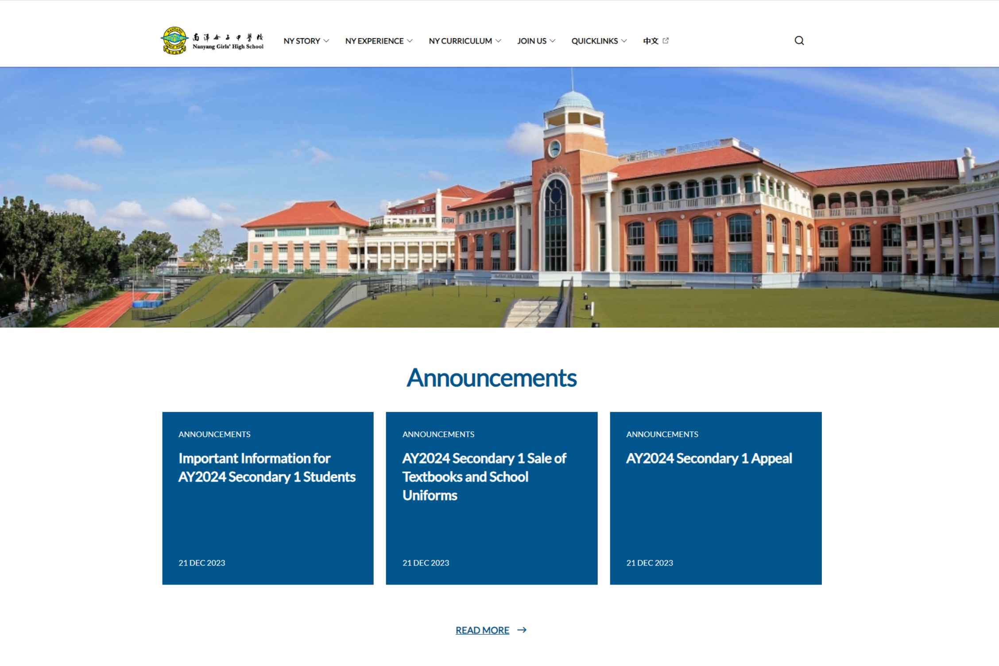
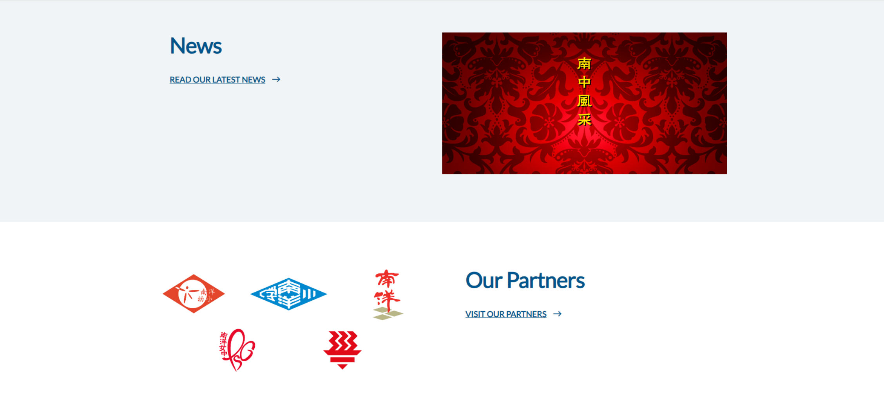
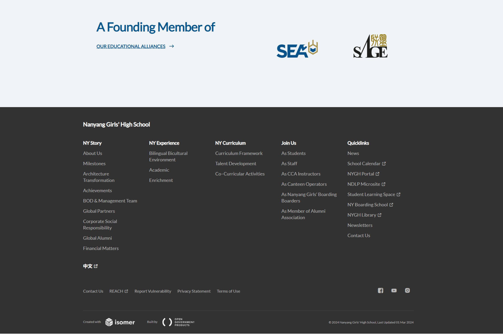

Introduction
In this project, I set out to redesign the homepage of my high school's (Nanyang Girls' High School) website. This school is home to all of my fondest memories, and I do not think that her current website adequately captures all the joy, creativity, and excellence that she inspires. It is currently a visually uninteresting website, and it also fails to highlight key information that primary users would be interested in.
Usability Problems
A closer look at the webpage:
Image 1: Menu Bar, Landing Image and Announcements
Image 2: News and Our Partners
Image 3: Our Educational Alliances and Footer
Problems with the existing design
The school website primarily serves as a point of information and a collection of resources for 3 groups of users:
- Prospective students and parents: Interested in curriculum, experiences and history (Main User)
- Current students: Interested in quick links and history of school for class projects
- Alumni: Interested in quick links and history of school for heritage projects
As such, my comments about the website's existing design revolve around its ability to respond to the needs of these identified users. I have organized my comments around the principles of Efficiency, Learnability and Memorability.
| Efficiency | Learnability | Memorability |
|---|---|---|
|
|
|
Accessibility Problems
WAVE detected 9 errors on the website, including:
- 3 x Missing alternative text
- 2 x Missing form label
- 1 x Empty heading
- 3 x Empty link
Assessment of WAVE's appraisal
WAVE was largely accurate in its detection of problems, except for the incorrect detection of empty links (the links were present).
The lack of a heading for the landing visual and alternative texts for some images was particularly concerning. These findings reveal an inaccessible design-- the absense of a heading and alternative text prevent screen readers from conveying an accurate audio description of the website to users.
Preliminary Sketches
As part of my redesign process, I started by hand-sketching new homepage wireframes.
Quick Sketching
The first exercise I did was to generate 9 different wireframes within the span of 9 minutes. This was a great exercise in forcing myself to abandon any desire for "perfection" and focus mainly on creating a new design with each iteration.
Final Sketch
After creating 9 designs, I combined my favourite elements into one final redesign. This design had a dynamic landing visual that showcased "The Nanyang Experience" (a carousel of photographs of students engaged in their passions), as well as easily accessible information about the school's curriculum and story/history.
Wireframing
Based off my final sketch, I created 3 wireframes for my redesign on Figma. These wireframes were for the Desktop, Tablet and Mobile displays of the webpage which was designed to be responsive.
Below are annotated illustrations of each display. I have also attached a link to a high-quality PDF of the displays below, if the web version is too grainy.
Style Guide
With my basic wireframe complete, I created a style guide for my website redesign.
For colors, I picked the school colors-- Blue, Yellow and White, in varying shades and tones.
For the font, I wanted a serif accent font for the page headers, subheaders and titles (Lora) and a standard sans serif font for the content (Inter). I used a formula [calc( ?px + ?vw)] to set the font size, so that the font would scale with the width of the user's screen, yet preserve a minimum font size for smaller screens, such as mobile phones.
High-Fidelity Mockup
Building off the wireframe and the style guide, I created three high-fidelity mockups on figma.
I have also attached a link to a high-quality PDF of the displays below, if the web version is too grainy.


Final Redesign
After all that research, ideation and prototyping...
This is the link to my final deployed redesigned website!
The website is responsive, and can be viewed on a phone (~375x667px), a tablet (~768x1024px) and a large computer (~3840x2160px).